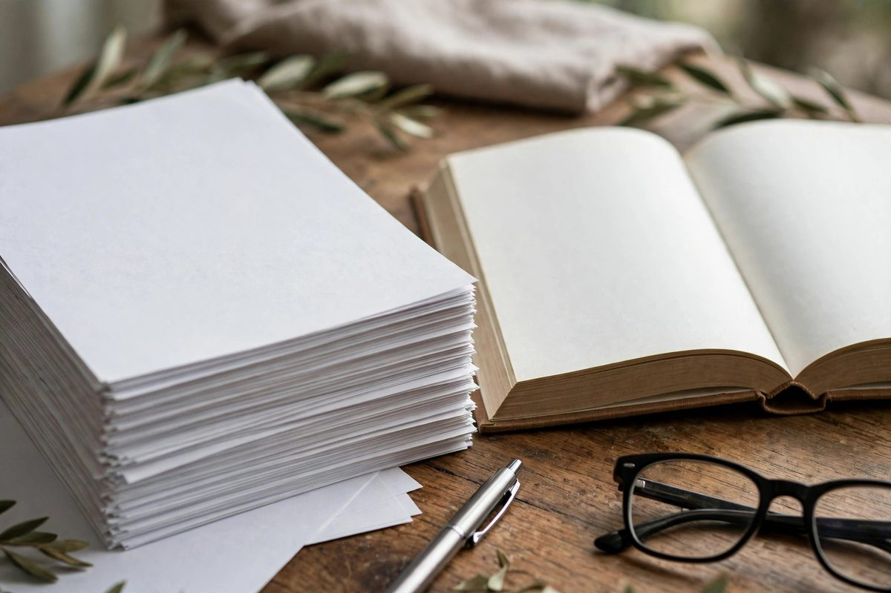

How Many Words Are on a Page? Books, Essays and Documents

The standard estimates
The most quoted estimate is 250 to 300 words per double-spaced page and 500 to 600 words per single-spaced page, using a standard 12-point font such as Times New Roman with one-inch margins. A five-page double-spaced essay is therefore roughly 1,250 to 1,500 words, and a ten-page single-spaced report is roughly 5,000 to 6,000 words. These numbers are rules of thumb, not exact counts, because real documents vary.
Books work differently. A typical paperback page holds 250 to 350 words, depending on the trim size, font, and line spacing, and a 300-page novel therefore contains roughly 75,000 to 105,000 words. Large-print books hold fewer words per page, while dense academic books can hold more. When an editor or agent asks for a page count, they usually mean a standard manuscript page, which is a specific format rather than any printed page.
What changes the count
Font choice is the biggest variable. A page set in 12-point Times New Roman holds noticeably more words than the same page in 14-point Arial, and narrow fonts such as Calibri fit more words than wide ones. Margins matter too: one-inch margins are standard, but wider margins can cut the count by a fifth. Line spacing has the largest effect of all, since double spacing roughly halves the words per page compared with single spacing.
Content type also changes the count. Pages with dialogue, short paragraphs, or many headings hold fewer words than dense blocks of prose, because white space takes up room. Tables, images, and block quotations reduce the word count per page as well. That is why converting between pages and words is always approximate, and why word count is the more reliable measure for anything that will be judged or paid for.
Converting pages to words
To estimate words from pages, multiply the page count by the words per page for your format. For a double-spaced 12-point document, use 250 words per page as a safe middle estimate. For single-spaced documents, use 500. For a paperback novel, use 300. If accuracy matters, count the words directly with a word counter instead of estimating, and state the format when you quote a page count to someone else.
Writers paid by the page should agree the definition in advance, because a publisher's page and a manuscript page are different things. A contract that pays per page should define the page format, or better, pay per word. When in doubt, ask for the word count target rather than the page target, since words are unambiguous and pages are not.
Putting It Into Practice
Next time someone asks for a page count, agree the format first: font, size, spacing, and margins, or better, agree a word count instead. Keep a note of the standard estimates, 250 words per double-spaced page and 500 per single-spaced page, and use them only for rough planning. For anything that matters, such as a submission, a contract, or an assignment, count the words directly with a reliable counter and quote that number. Words are exact; pages are an approximation that causes avoidable arguments. Whenever accuracy matters, count the words directly instead of estimating from pages, and quote the word count.
Frequently Asked Questions
How many words is a 5-page essay double-spaced?
About 1,250 to 1,500 words, using the standard 250 to 300 words per double-spaced page.
How many words are on a book page?
Typically 250 to 350 words for a standard paperback, depending on font size and page dimensions.
How many words per page single-spaced?
About 500 to 600 words per page in 12-point font with one-inch margins.